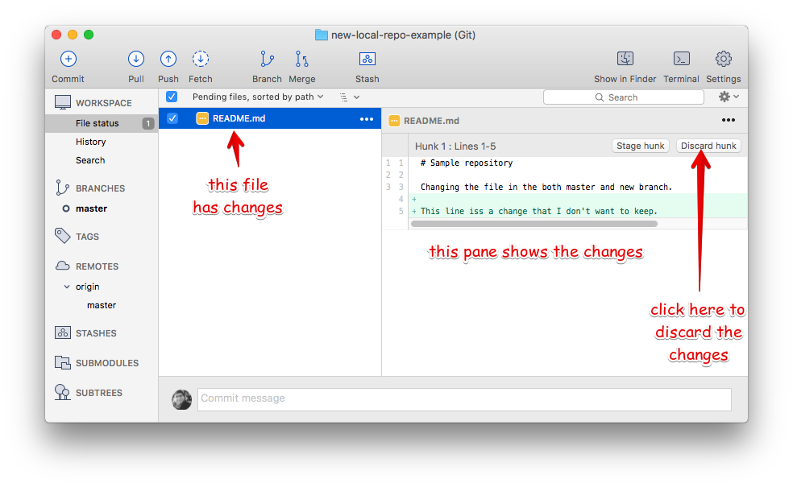
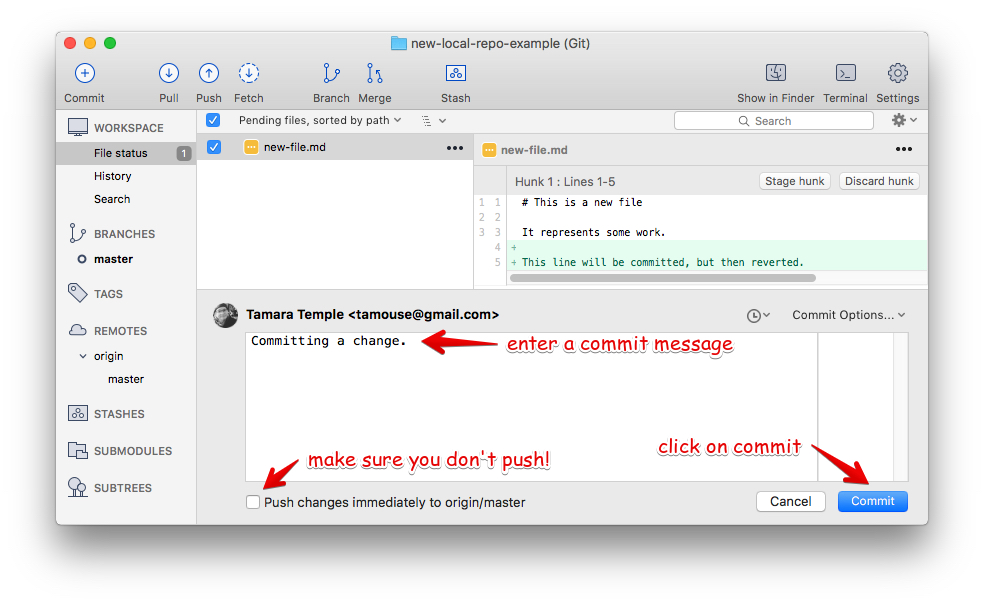
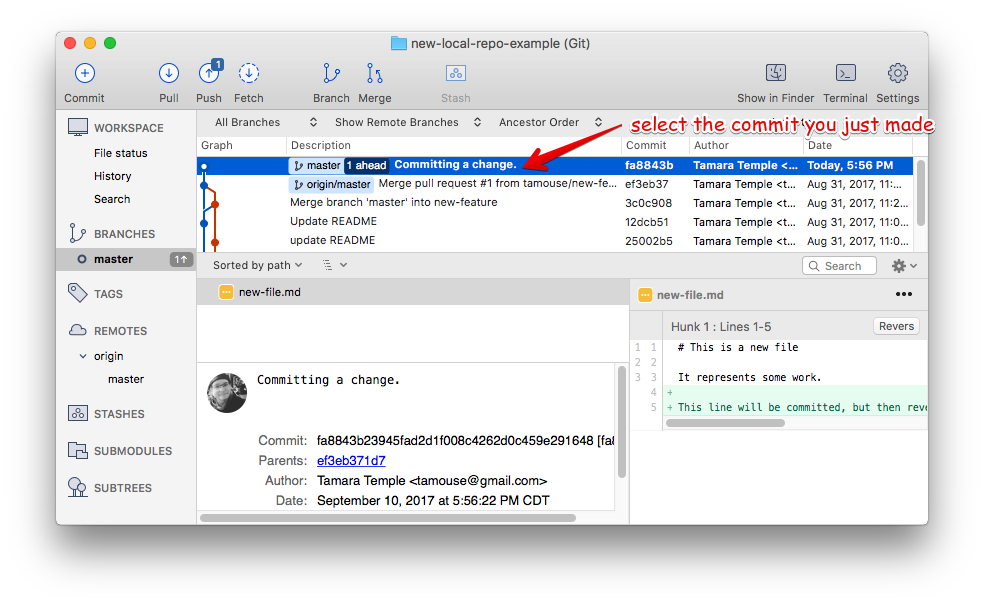
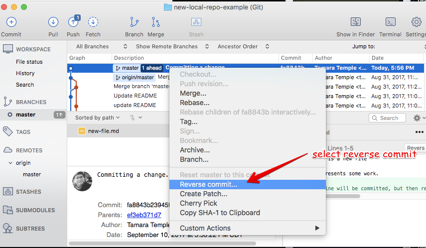
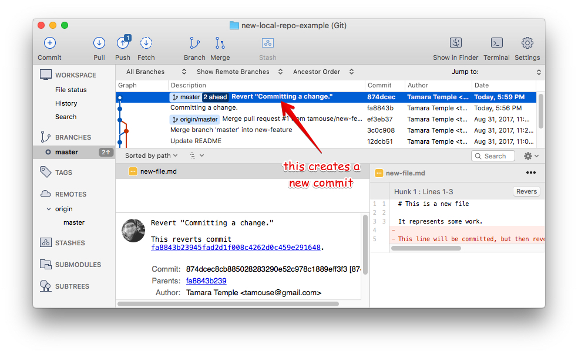
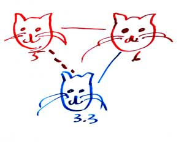
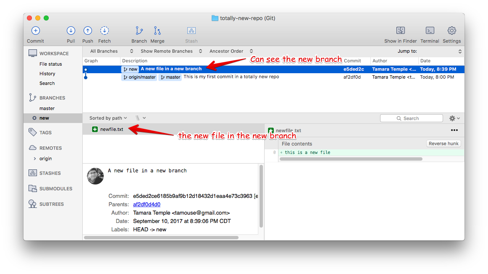
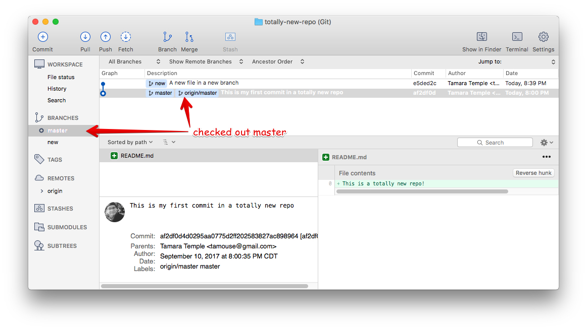
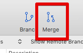
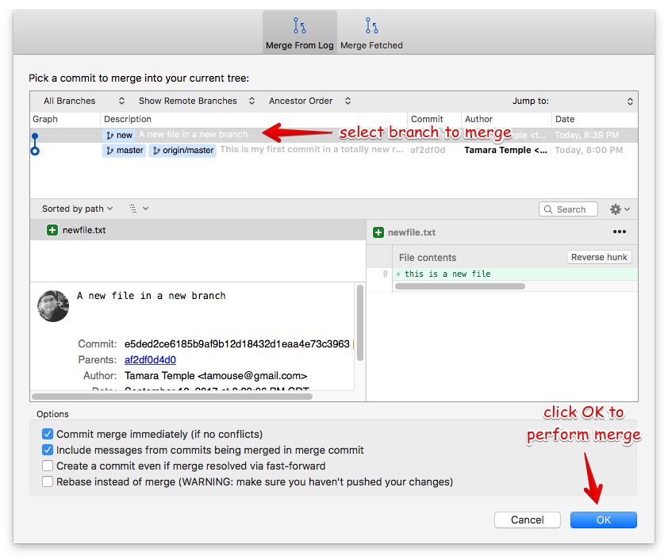

SourceTree
In this section, we'll be working with SourceTree, a GUI desktop application that handles version control.
Download
Go to https://www.sourcetreeapp.com/ and download the version for your OS (Mac or Win)
Installation
Run the installer
Install steps
- Sign up with Atlassian
- Register your copy
- Skip step that connects to BitBucket or Github
- After installation, start up SourceTree
Configure
Set Preferences
From the SourceTree menu:

set user info
Make sure your user information is correct:

set global ignore file
Set up the global gitignore file.

You can edit it from here as well.
set branch push policy to matching
Set push branches to "matching":

Connect to Github
Let's go ahead and connect up to your GitHub account.
Under the Account tab, click on "Add"

Then select "GitHub", "OAuth", and click on "Connect"

Log in to GitHub with your account

After logging in, click on "Generate"

Have SourceTree generate the key pair.
You can leave the Pass phrase fields empty.

Click on "OK" to enable the connection to GitHub

You are now connected to your GitHub account

Verify that the SourceTree key is on Github.
In the browser, go to your account, Settings -> SSH and GPG Keys
Look for the SourceTree key

Getting Familiar with SourceTree
Repository Bookmarks
The bookmarks window gives you quick access to all your repositories that are managed in SourceTree

Creating new items
- You can create new bookmarks and bookmark groups.
- You can create new local and remote repos.
- You can add existing local or remote repos.

Repository Window
The repository window contains the controls and information for managing the repo.
- Adding, commiting, and pushing changes
- Creating, checking out, merging, and deleting branches

Menubar
The menubar at the top has the major operations

Sidebar
Hover over the major items in the side bar to show or hide them

Log
The log area in the upper right quadrant shows the history of commits to the repo.

Status
The status area shows the current status of the files at the selected log entry.

Create a New Project, Local First
You can create a new local project repo
… and create the remote at the same time
Choose location

Create the local repo

Tell it the location

Create the remote

See the new repo on Github

But it's still empty
Let's Develop It!
Objective: Create a new local project with SourceTree
- From the bookmarks window: New -> Create Local Repository
- Provide it a path, i.e., the folder where your project will be
created.
- Use the "…" button to navigate to the place you want your project
- Create a new folder that will be the name of your project
- The project name is automatically filled in.
- Make sure you're creating a Git repository.
- Make sure to check the "Also create remote repository" checkbox
- Click on create
- Create the remote
- Fill in the description if you wish
- Make sure the "private repository" checkbox is not checked
Creating a New Project, Remote First
If you want to go the other way, you can start by creating the remote repo first.
Create the Remote Repo
Start creating the remote repo

Select "Create Remote"

Create the remote repo

Clone the remote to your local machine
Click on remote to show your remote repos

Use the search box to filter the repos

Clone the repo

Set the location for the clone on your local machine

Click the "Clone" button

Look at your new repo!

but it's still empty…
Let's Develop It!
Objective: create a new project from the remote side
- From the bookmarks window: New -> Create Remote Repository
- Git the repo a name and description.
- Make sure "private repository" is not checked.
- Create the remote.
- Click on "Remote".
- Search for your repo.
- Click on "Clone".
- Give the path to the new repo. (The last folder and the project name should match.)
- Click "Create"
Create some content
Fire up your editor and create a README.md file:
# Hello World!
This is the README file for this repository.
It doesn't matter for this class what you put here.
It's going to look different in the rest of the slides.
Check on the status

Add, commit, and push

Output from commit message

See local branches
At first, SourceTree hides the local branches, so tell it to show them

See the remote branches, too

Finally, look over at Github

Let's Develop It!
Objective: Put some content in our project and put it under version control
- Open the project file in your editor.
- Create a README.md file, and put something in it.
- Save the file.
- Switch back to SourceTree.
- Stage the file.
- Commit and push the changes.
Tracking and Reverting Changes
A great feature of Git is that it lets you erase any changes you've made in a step to get back to the original.
You can recover from changes made:
- before you add the changes to staging
- after adding but before committing the changes to the local repo
- after committing to the local repo but before pushing to the remote
- after pushing to the remote
Before staging
If you've made some changes to try something out but you decide to abandon them, SourceTree makes this easy
discard hunks
After staging, before committing
After you've staged your changes, but before you commit them, SourceTree can also recover these.
After committing, before pushing
Make some changes, and let's commit them.
commit the changes
select the commit to revert
select "Reverse commit" from drop-down
after the revert, a new commit
After pushing
Even if you've pushed to the remote, you can fix things.
However, since your teammates may have pulled your changes, you'll need to make a new commit and push those changes. (sorry)
This is to prevent discrepancies between the indexes in the various repositories.
A better way
Since you can't very easily erase changes in a remote (pushed) repository, the better way to develop projects is with branching and merging.
Let's Develop It!
Objective: Try out making and reverting changes.
No directives here, just try out the various options shown prior.
Multiple Development Paths
Work on multiple versions at the same time with:
- Branching
- Merging
Creating a new branch to work on a feature or bug,

and then merge it back into the regular development branch
Branching
To make a new branch from an existing branch, click the "Branch" button:

Give the branch a name
In the dialog, enter the new branch name:

Leave the "Working copy parent" and "Checkout new branch" options selected.
Create the new branch
Press then "Create Branch" button.

Your new branch
In SourceTree, the current working branch is highlighted.

Make some changes
After you make some changes, SourcTree reports uncommitted changes

See the pending changes

Stage the changes
Select the checkbox next to the changes you want to stage (or all)

Commit the changes
Click on "Commit" to start the commit proess

Review, comment, and commit
Review the changes, add a commit message, and commit.

Check the "Push" checkbox to also peform the push to the remote
Output from push

After the commit and push

Let's Develop It
Objective: Create a branch and push changes to it
- Create a new branch.
- Create a new file in the branch with some content.
- Check the status in SourceTree.
- Stage, commit, and push the changes in the branch.
Merging
- When you're finished working in the development branch, you'll want to merge those changes with the master branch.
- Since the master branch may have also been updated, you need to first pull changes to master and merge with your development branch.
- Resolve any conflicts that may arise.
- Finally, Merge your development branch with master.
Merging with no conflicts
A new branch with a file
Checkout master
Merge
Merge Dialog
Let's create a conflict
Set up a conflict with master
Edit the README.md file

Commit the update, but don't push

Set up a conflict to resolve
Checkout master

Edit the README.md file in master
See the uncommitted changes

Commit and push changes in master

Check out the new branch again

CONFLICT SET UP!
The README.md file is changed in both the master and new
branches
- these changes cannot be resolved automatically
Now back to the regularly scheduled program
Updating new branch with changes from master
Merge master into the new branch

Confirm the merge

Merge result output

Merge conflict warning

Merge conflicts visible in repo status

Merging when there are conflicts
Resolving Merge Conflicts
Prepare to resolve conflict

Launch merge tool

Merge choices

Fix changes in editor

Edit the file to resolve changes

Mark the file resolved

Complete the merge

Commit to complete the merge

Push all the commits

Push dialog

Merge the new branch into master
Over on GitHub…

Create a Pull Request

PR Dialog

PR View

PR Files Diff

Merge PR Button

Complete the merge

Success!

Updating the Local Master
Checkout local master

Pull changes from remote

Pull dialog

Pull output

Let's Develop It!
Objective: Set up a conflict between the master and new branch
- In the same branch, edit the README file in an obvious way.
- Save the file, stage and commit, but do not push the changes.
- Checkout the master branch.
- Edit the README file in another obvious way.
- Save the file, stage, commit, and push the changes to the remote.
Let's Develop It!
Objective: Merge master into the new branch and resolve conflicts
- Checkout the new branch.
- Merge master into the new branch to catch up changes.
- Resolve the conflict in README.
- Complete the merge.
- Push the changes to the remote.
Let's Develop It!
Objective: Use Github to prepare a Pull Request and complete it
- On Github, create a Pull Request for your new branch to merge with master.
- Merge the Pull Request.
Let's Develop It!
Objective: update the local master with changes from the remote
- In SourceTree, check out your master branch.
- Pull the latest updates from the remote.
Cleaning up
Delete the old "new" branch
The "new" branch is now fully merged, so it can be deleted

Delete branch dialog

Delete branch output

Status after delete

Let's Develop It!
Objective: Clean up from closing the branch
- In SourceTree, view the local branches
- Select the new branch that was just merged
- Right-click, and select Delete…
- Check the "Delete remote" checkbox
- Click "OK" to start the operation
Next section:
Working in Teams and Practical Git